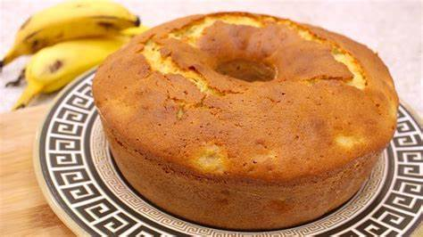

Modo de Preparo
Vamos para a melhor parte! Aqui, teremos passo a passo de como fazer nosso desejado bolo. Lembre-se de reler para garantir que está tudo certo!
- Coloque o açúcar em uma panela e deixe derreter.
- Despeje o açúcar derretido em uma forma, espalhando.
- Disponha as rodelas de abacaxi no fundo da forma e reserve.
- No liquidificador, bata o leite de coco, leite, as claras, a manteiga e o açúcar.
- Despeje a massa em uma tijela.
- Acrescente a farinha e misture.
- Depois, coloque o fermento e misture delicadamente.
- Coloque a massa na forma e leve ao forno baixo e preaquecido. Deixe assar por cerca de 40 minutos (depende do forno).

Nossas redes sociais:
Nosso Instagram possui informações e fotos de nossos comércios!

No Youtube, temos tutoriais gratuitos e completos de outras receitas.